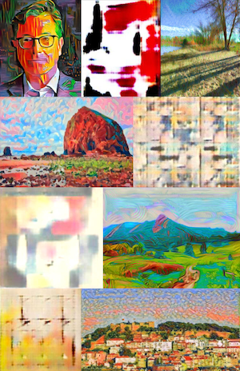

ARTificial Intelligence
I have compiled some of my favorite AI artworks created using Style Transfer (ST) and Generative Adversarial Network (GAN). ST is a deep learning model that combines style elements from one image and content from a photo. On the other hand, GAN relies on the training of two neural networks - the discriminator and the generator, to produce images that mimic the style/genre of the training data. Once both networks are tuned, the generator can created an image from a 1-D vector.
All of the art pieces shown below were created using PyTorch, prints can be purchased thru Fine Art America .
